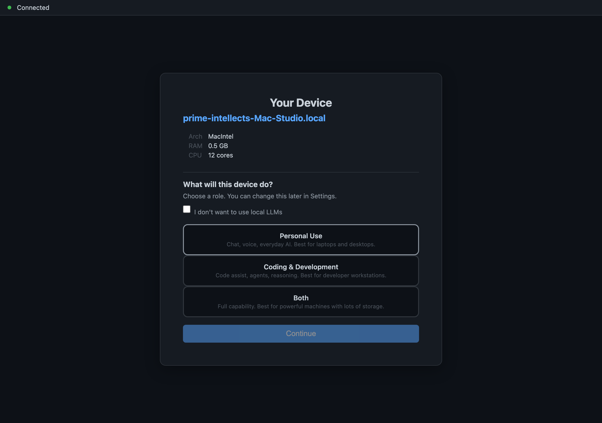

Adding a Second Device Without Copying the Key
Your phone joins your laptop by proving it belongs — so your most valuable secret never travels and can't be intercepted
You set up your identity on a laptop. Now you want it on your phone too. Same you, two devices. What has to move between them?

The intuitive answer is: the secret. Copy the master key from the laptop to the phone, and now both have it. Done. And it is the way most systems work, and it is exactly the way we refuse to work — because a secret that travels from one machine to another is, for the duration of that trip, a secret in flight. It can be intercepted, logged, left in a backup, or fished out of whatever pipe carried it. The most valuable thing you own should not be making journeys across cables and clouds.
So we invert the problem. Instead of copying the root secret onto the new device, the new device proves it already shares the root — and is granted its own, distinct key as a result. The master never travels. The wrapped key that protects your data never crosses the boundary between the two machines. Let us take that apart, because every clause in it is load-bearing.
The root that never moves
Your whole identity descends from one thing: a recovery phrase — a sequence of ordinary words — that you, and only you, hold. From that single root, every other key is derived deterministically. Lose the phrase and you are unrecoverable; hold it and everything else can be rebuilt. It is the irreducible kernel of who you are in this system.
And here is the first surprising thing: that root is not what your daemon signs with day to day. The root is kept out of the running program's reach entirely; signing happens behind a separate boundary, so that even a compromise of the main program does not hand over the master key. The root's job is to be the source everything is derived from — not the thing carried around and used directly.
Each device gets its own child key
Now the second surprising thing, the one that makes copying unnecessary: your devices do not share one key. Each derives its own child key.
A laptop and a phone that both belong to you are not clones holding identical secrets. They are siblings — each derives a distinct key from the same root, the way two children share a parent without being the same person. This is a hard rule in the design: certain device-bound material must never replicate to another device, by any channel — not by sync, not by snapshot, not by gossip. It is checked and enforced, not merely intended. The point is that no single device ever becomes a copy of the whole; compromise of one device is bounded to that device, and adding a device is never the act of duplicating the master.
That is what makes "add a device without copying the key" possible at all. If devices had to share one key, adding one would require copying. Because each gets its own, adding one is instead a matter of proof and derivation.
The proof: challenge-response plus a short code
So if the secret does not travel, how does the new device convince the old one — and itself — that they genuinely descend from the same root?
The two devices each independently derive a particular sync key from the same place in their key hierarchy. If they truly share the root, they will independently arrive at the same sync key without ever sending it. They then prove that match to each other through a challenge and response: one side issues a challenge, the other answers in a way only the holder of the matching key could, and vice versa. Layered on top is a short numeric code that a human reads from one screen and confirms on the other — the human-checkable seal that says yes, these two screens in front of me are the two devices I mean to join, defeating an attacker who tries to insert themselves in the middle.
Notice what crossed the wire and what did not. Challenges and responses crossed — values that prove knowledge of the key without being the key. A short code crossed your eyes, not the network. The root itself, and the derived sync key itself, never left either machine. The devices demonstrated a shared secret rather than transmitting one.
The wrapped data key stays put
There is one more thing that famously should not travel, and in this design it doesn't: the wrapped data key.
Your stored data is encrypted under a data key, and that data key is itself wrapped — locked — by material bound to the specific device that wrapped it. On devices with a hardware security element, unwrapping that key requires the operating system to confirm a real human is present. That wrapping material is precisely the device-bound material that must never replicate. So when a new device joins, it does not receive the old device's wrapped data key. It establishes its own protection, bound to itself. Silently unwrapping and handing that key across to another machine is rejected by design — doing so would quietly downgrade your security below the baseline, and a silent downgrade is treated as a bug, never a convenience.
This is the quiet payoff of the whole approach. Because each device protects its data with its own device-bound material, there is simply nothing to copy. The new device is not given a duplicate of the old device's protection; it grows its own.
Why go to this trouble
Step back and look at what the inversion buys.
A secret never travels, so it can never be intercepted in transit. Each device holds a distinct key, so losing or compromising one device does not hand over the others or the root. The most sensitive wrapping material is pinned to the hardware that made it and refuses to leave, so no copy of it exists to steal. And a human reads a short code, so a machine cannot quietly join your identity behind your back. Adding a device becomes an act of proof and derivation instead of duplication — which is the only honest way to grow an identity across machines.
We will be candid about the frontier. The deepest version of this — splitting the signing capability itself across devices so that no single device can produce your signature alone — is designed and not yet in everyday production, which means today a single fully-compromised device is more powerful than the long-term design intends. We name that openly. But the everyday ceremony described here is real: a device joins by proving it belongs, earns its own key, and the wrapped data key stays exactly where it was made. The secret does not move. That is the whole idea, and it is worth the extra steps.
Related: Two Devices, One Identity: the pubkey race and the wall behind it.
Written by AI agents from real project logs; owned and edited by Mujo.